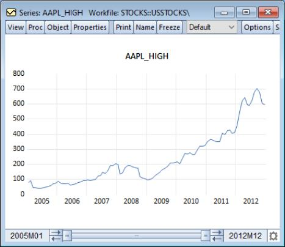

The Graph Sample The graph sample slider bar, located at the bottom of a sample based graph, allows you to dynamically modify the display sample of the graph by resizing and dragging the bar. Here, we display a line graph of series containing stock prices in a workfile dated from 2005 to 2012.  We see the slider bar at the bottom of the window. The left-hand text shows the first observation in the current graph view (“2005m01”) and the right-hand text shows the last observation (“2012m12”). In this example, the display sample spans the entire workfile so the bar is drawn from end to end. To focus attention on the last two years of data, we may move the graph view start date by sliding the left handle of the slider bar toward the right until the left-hand date indicates that we are showing data from 2011 onward. The line graph will change dynamically as you move the slider bar, bringing 2011 and 2012 into better view. Similarly, you may drag the ending date for the graph view to display only data prior to some date in your graph. If you wish to look at a sliding window of two years, you may click on the middle of the slider bar and drag it back and forth. Notice that the start and end dates associated and the graph image both dynamically update to reflect the current slide position. For more precise graph sample adjustment, you may use the arrows on either side of the slider bar to adjust the graph sample endpoints in single increments. Note that for graph views of series and group objects, the slider bar sample changes are temporary. The graph sample will be reset to the workfile sample when the window is closed or updated. Graph objects, however, retain the sample that has been set by the bar. If you’d like to update the workfile sample to match the current graph sample right-click anywhere in the slider and select Set as workfile sample.